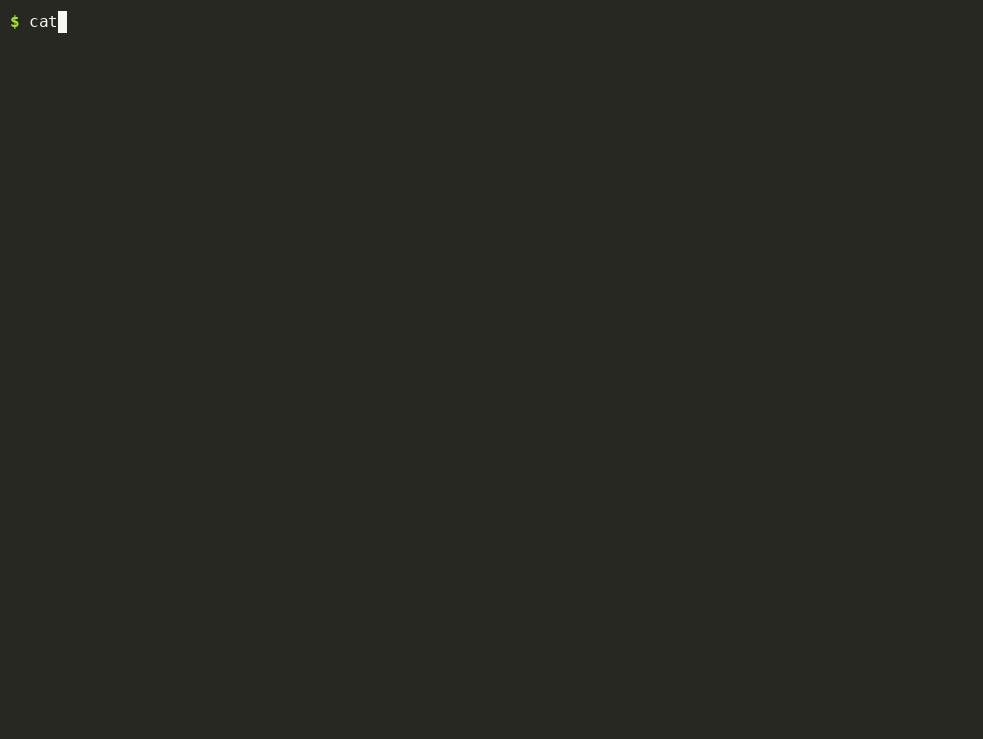

-v), LLVM IR, lli, and the test suite.How it works
- Lexical analysis.
lexical.ldefines token patterns; Flex generatesyylex(), which turns characters into tokens such asINT,IDENTIFIERandNUMBER. - Syntax analysis.
parser.yis an LALR(1) grammar. Precedence declarations resolve operator ambiguity and the danglingelse. - Semantic analysis. As each rule is reduced, its action looks identifiers up in a scoped symbol table, checks types, and validates function calls. Errors are reported with line numbers, and no IR is written.
- Code generation. The same actions call
llvm_ir.c, which emits IR with LLVM'sIRBuilder: anallocaper local,load/storefor access. The module is verified and written tooutput.ll.
There is no separate syntax tree. The compiler does single-pass syntax-directed translation: IR is emitted the moment Bison reduces each rule. Bison reduces bottom-up, so a loop's condition is parsed before the loop rule itself runs. Control flow handles this with mid-rule actions and a stack of basic blocks.
One statement, step by step
For return a * 7;, here is what ./compiler -v prints, and the IR each reduction produces:
Processing token at line 3: RETURN, Lexeme: return
Processing token at line 3: IDENTIFIER, Lexeme: a
Processing token at line 3: MULT, Lexeme: *
Expanding rule: expr → IDENTIFIER (line 3)
Processing token at line 3: NUMBER, Lexeme: 7
Expanding rule: expr → NUMBER (line 3)
Expanding rule: expr → expr MULT expr (line 3)
Processing token at line 3: SEMI, Lexeme: ;
Expanding rule: stmt → RETURN expr SEMI (line 3); expr → IDENTIFIER
%a1 = load i32, i32* %a, align 4
; expr → NUMBER gives the constant 7
; expr → expr MULT expr
%multmp = mul i32 %a1, 7
; stmt → RETURN expr SEMI
ret i32 %multmpQuick start
Ubuntu, Debian or WSL:
sudo apt install flex bison g++ llvm-14 llvm-14-dev
export PATH=/usr/lib/llvm-14/bin:$PATH
git clone https://github.com/CodeRafay/c-compiler-flex-bison-llvm.git
cd c-compiler-flex-bison-llvm
make # builds ./compiler
./compiler testCaseExamples/test.c # writes output.ll
lli output.ll; echo $? # runs it, prints main's return value
make test # runs all 166 testsWhat it supports
Language
int,float,bool,void, with C-style int→float conversion- Global and local variables; one-dimensional arrays
- Functions, parameters, return values, prototypes
if/else if/else,while,for,switchwith fallthrough,break,continue- Arithmetic, relational, logical,
++/--operators printfwith format strings,scanf
Not supported yet
- Pointers, structs,
char, strings,double - Unbraced
if/loop bodies,do … while,?: - Compound assignment (
+=) and casts - Short-circuit
&&/||(both sides are evaluated) #defineand the rest of the preprocessor
The full list is in the README.
Who it's for
Students in a compiler construction or compiler design course, developers learning how Flex and Bison fit together, and anyone who wants a hands-on introduction to generating LLVM IR. Every feature is covered by an automated test that compiles a program, runs it with lli, and checks its exit code and output. If you use it for coursework, follow your institution's academic integrity rules.